For Fetching Records¶
In this section, we will cover the following functions in-depth listed below:
uadmin.AdminPage¶
func AdminPage(order string, asc bool, offset int, limit int, a interface{}, query interface{}, args ...interface{}) (err error)
AdminPage fetches records from the database with some standard rules such as sorting data, multiples of, and setting a limit that can be used in pagination.
Parameters:
order string: Is the field you want to specify in the database.
asc bool: true in ascending order, false in descending order.
offset int: Is the starting point of your list.
limit int: Is the number of records that you want to display in your application.
a interface{}: Is the variable where the model was initialized
query interface{}: Is an action that you want to perform in your database
args …interface{}: Is the series of arguments for query input
Used in the tutorial:
Create a file named admin_page_list.go inside the api folder with the following codes below:
// AdminPageHandler !
func AdminPageHandler(w http.ResponseWriter, r *http.Request) {
r.URL.Path = strings.TrimPrefix(r.URL.Path, "/admin_page_list")
r.URL.Path = strings.TrimSuffix(r.URL.Path, "/")
todo := []models.Todo{}
// "id" - order the todo model by id field
// false - to sort in descending order
// 0 - start at index 0
// 3 - get three records
// &todo - todo model to execute
// id > ? - a query where id is greater than the value
// 0 - a value to be set in ?
uadmin.AdminPage("id", false, 0, 3, &todo, "id > ?", 0) // <-- place it here
uadmin.ReturnJSON(w, r, todo)
}
Establish a connection in the main.go to the API by using http.HandleFunc. It should be placed after the uadmin.Register and before the StartServer.
func main() {
// Some codes
// AdminPageHandler
http.HandleFunc("/api/", uadmin.Handler(api.AdminPageHandler))
}
api is the folder name while AdminPageHandler is the name of the function inside admin_page_list.go.
Run your application and see what happens.

Quiz:
uadmin.All¶
func All(a interface{}) (err error)
All fetches all object in the database.
Parameter:
a interface{}: Is the variable where the model was initialized
Used in the tutorial:
Before we proceed to the example, read Tutorial Part 9 - Introduction to API to familiarize how API works in uAdmin.
Create a file named friend_list.go inside the api folder with the following codes below:
// FriendListHandler !
func FriendListHandler(w http.ResponseWriter, r *http.Request) {
r.URL.Path = strings.TrimPrefix(r.URL.Path, "/friend_list")
r.URL.Path = strings.TrimSuffix(r.URL.Path, "/")
friend := []models.Friend{}
uadmin.All(&friend) // <-- place it here
uadmin.ReturnJSON(w, r, friend)
}
Establish a connection in the main.go to the API by using http.HandleFunc. It should be placed after the uadmin.Register and before the StartServer.
func main() {
// Some codes
// FriendListHandler
http.HandleFunc("/friend_list/", uadmin.Handler(api.FriendListHandler)) // <-- place it here
}
api is the folder name while FriendListHandler is the name of the function inside friend_list.go.
Run your application and see what happens.

Quiz:
uadmin.Avg¶
func Avg(a interface{}, column string, query interface{}, args ...interface{}) float64
Avg return the average of a column in a table based on a filter.
uadmin.AvgTable¶
func AvgTable(table string, column string, query interface{}, args ...interface{}) float64
AvgTable return the average of a column in a table based on a filter.
uadmin.Choice¶
type Choice struct {
V string
K uint
Selected bool
}
Choice is a struct for the list of choices.
Suppose I have four records in my Category model.
Education ID = 4
Family ID = 3
Work ID = 2
Travel ID = 1

And you have the given fields in the Todo model.
type Todo struct {
uadmin.Model
Name string
Description string `uadmin:"html"`
Category Category
CategoryID uint
TargetDate time.Time
Progress int `uadmin:"progress_bar"`
}
Inside the main function, apply uadmin.Schema function that calls a model name of “todo” that accesses the category field in the docS variable. Limit the choices by getting the second and fourth record only in the category field.
// Initialize docS variable that calls the category field of the
// Todo model in the schema
docS := uadmin.Schema["todo"].FieldByName("category")
// LimitChoicesTo is based on the fetched records to be appended in the
// drop down list.
docS.LimitChoicesTo = func(m interface{}, u *uadmin.User) []uadmin.Choice {
// Build choices
choices := []uadmin.Choice{
{
V: "-",
K: 0,
Selected: false,
},
}
// Initialize an array of Category model
categorylist := []models.Category{}
// Get the second and fourth record
uadmin.Filter(&categorylist, "id IN (2,4)")
// Loop the fetched records
for _, c := range categorylist {
// Append by getting the ID and string of each category records
choices = append(choices, uadmin.Choice{
V: uadmin.GetString(c),
K: uadmin.GetID(reflect.ValueOf(c)),
Selected: false,
})
}
return choices
}
Run your application, go to the Todo model and see what happens in the Category field.

When you notice, the value of the Category field is empty by default. You can also type whatever you want to search in the choices list above. For this example, let’s choose “Education”.
Once you are done, save the record and see what happens.

Congrats, now you know how to create a choice by building an empty choice, fetching records from the database, and appending the fetched records in the drop down list.
Quiz:
uadmin.Count¶
func Count(a interface{}, query interface{}, args ...interface{}) int
Count return the count of records in a table based on a filter.
Parameters:
a interface{}: Is the variable where the model was initialized
query interface{}: Is an action that you want to perform in your database
args …interface{}: Is the series of arguments for query input
Used in the tutorial:
Suppose you have ten records in your Todo model.

Go to the main.go. Let’s count how many todos do you have with a friend in your model.
func main(){
// Some codes
// Initialize the Todo model in the todo variable
todo := models.Todo{}
// Initialize the Friend model in the todo variable
friend := models.Friend{}
// Fetch the first record from the database
uadmin.Get(&friend, "id=?", todo.FriendID)
// Return the count of records in a table based on a Get function to
// be stored in the total variable
total := uadmin.Count(&todo, "friend_id = ?", todo.FriendID)
// Print the result
uadmin.Trail(uadmin.INFO, "You have %v todos with a friend in your list.", total)
}
Check your terminal to see the result.
[ INFO ] You have 5 todos with a friend in your list.
Quiz:
uadmin.CountTable¶
func CountTable(table string, query interface{}, args ...interface{}) int
CountTable return the count of records in a table based on a filter.
uadmin.Filter¶
func Filter(a interface{}, query interface{}, args ...interface{}) (err error)
Filter fetches records from the database.
Parameters:
a interface{}: Is the variable where the model was initialized
query interface{}: Is an action that you want to perform in your database
args …interface{}: Is the series of arguments for query input
Before we proceed to the examples, read Tutorial Part 9 - Introduction to API to familiarize how API works in uAdmin.
Example #1: Assigning Multiple Values in a Parameter¶
Suppose you have five records in your Todo model.

Create a file named filter_list.go inside the api folder with the following codes below:
func FilterListHandler(w http.ResponseWriter, r *http.Request) {
// r.URL.Path creates a new path called /filter_list
r.URL.Path = strings.TrimPrefix(r.URL.Path, "/filter_list")
r.URL.Path = strings.TrimSuffix(r.URL.Path, "/")
// Call an array of Todo model
todo := []models.Todo{}
// Set the parameter as todo_id that can get multiple values
todoList := strings.Split(r.FormValue("todo_id"), ",")
// Fetch ID records from DB
uadmin.Filter(&todo, "id IN (?)", todoList) // <-- place it here
// Prints the todo in JSON format
uadmin.ReturnJSON(w, r, todo)
}
Establish a connection in the main.go to the API by using http.HandleFunc. It should be placed after the uadmin.Register and before the StartServer.
func main() {
// Some codes
// FilterListHandler
http.HandleFunc("/filter_list/", uadmin.Handler(api.FilterListHandler)) // <-- place it here
}
api is the folder name while FilterListHandler is the name of the function inside filter_list.go.
Run your application. Search for the first and third ID on the todo_id parameter in the address bar and see what happens.

Example #2: Returning the Name¶
Create a file named filter_list.go inside the api folder with the following codes below:
package api
import (
"net/http"
"strings"
"github.com/username/todo/models"
"github.com/uadmin/uadmin"
)
// FilterListHandler !
func FilterListHandler(w http.ResponseWriter, r *http.Request) {
r.URL.Path = strings.TrimPrefix(r.URL.Path, "/filter_list")
r.URL.Path = strings.TrimSuffix(r.URL.Path, "/")
res := map[string]interface{}{}
filterList := []string{}
valueList := []interface{}{}
if r.URL.Query().Get("todo_id") != "" {
filterList = append(filterList, "todo_id = ?")
valueList = append(valueList, r.URL.Query().Get("todo_id"))
}
filter := strings.Join(filterList, " AND ")
todo := []models.Todo{}
results := []map[string]interface{}{}
uadmin.Filter(&todo, filter, valueList) // <-- place it here
// This loop returns only the name of your todo list.
for i := range todo {
results = append(results, map[string]interface{}{
"Name": todo[i].Name,
})
}
res["status"] = "ok"
res["todo"] = results
uadmin.ReturnJSON(w, r, res)
}
Establish a connection in the main.go to the API by using http.HandleFunc. It should be placed after the uadmin.Register and before the StartServer.
func main() {
// Some codes
// FilterListHandler
http.HandleFunc("/filter_list/", uadmin.Handler(api.FilterListHandler)) // <-- place it here
}
api is the folder name while FilterListHandler is the name of the function inside filter_list.go.
Run your application and see what happens.

See uadmin.Preload for more examples of using this function.
Quiz:
uadmin.FilterBuilder¶
func FilterBuilder(params map[string]interface{}) (query string, args []interface{})
FilterBuilder changes a map filter into a query.
Parameters:
params map[string]interface{}: Stores arbitrary JSON objects and arrays
query string: Returns an AND to concatenate the parameters based on a filter
args []interface{}: Is the variable or container that can be used in execution process.
Before we proceed to the example, read Tutorial Part 9 - Introduction to API to familiarize how API works in uAdmin.
Suppose you have ten records in your Todo model.
Create a file named filterbuilder.go inside the api folder with the following codes below:
package api
import (
"net/http"
"strings"
"github.com/username/todo/models"
"github.com/uadmin/uadmin"
)
// FilterBuilderHandler !
func FilterBuilderHandler(w http.ResponseWriter, r *http.Request) {
// r.URL.Path creates a new path called /filterbuilder
r.URL.Path = strings.TrimPrefix(r.URL.Path, "/filterbuilder")
r.URL.Path = strings.TrimSuffix(r.URL.Path, "/")
res := map[string]interface{}{}
// Initialize the Todo model
todo := []models.Todo{}
// Fetch data from DB
query, args := uadmin.FilterBuilder(res) // <-- place it here
uadmin.Filter(&todo, query, args)
// Accesses and fetches data from another model
for t := range todo {
uadmin.Preload(&todo[t])
}
// Prints the todo in JSON format
res["status"] = "ok"
res["todo"] = todo
uadmin.ReturnJSON(w, r, res)
}
Establish a connection in the main.go to the API by using http.HandleFunc. It should be placed after the uadmin.Register and before the StartServer.
func main() {
// Some codes
// FilterBuilderHandler
http.HandleFunc("/filterbuilder/", uadmin.Handler(api.FilterBuilderHandler)) // <-- place it here
}
api is the folder name while FilterBuilderHandler is the name of the function inside filterbuilder.go.
Run your application and see what happens.

Quiz:
uadmin.FilterList¶
func FilterList(s *ModelSchema, order string, asc bool, offset int, limit int, a interface{}, query interface{}, args ...interface{}) (err error)
FilterList fetches the all record from the database matching query and args where it selects only visible fields in the form based on given schema.
Parameters:
s *ModelSchema: Is the variable where the model was called in the Schema
order string: Is the field you want to specify in the database.
asc bool: true in ascending order, false in descending order.
offset int: Is the starting point of your list.
limit int: Is the number of records that you want to display in your application.
a interface{}: Is the variable where the model was initialized
query interface{}: Is an action that you want to perform in your database
args …interface{}: Is the series of arguments for query input
Before we proceed to the example, read Tutorial Part 9 - Introduction to API to familiarize how API works in uAdmin.
Suppose you have five records in the Todo model that has a field of Name and CreatedAt.
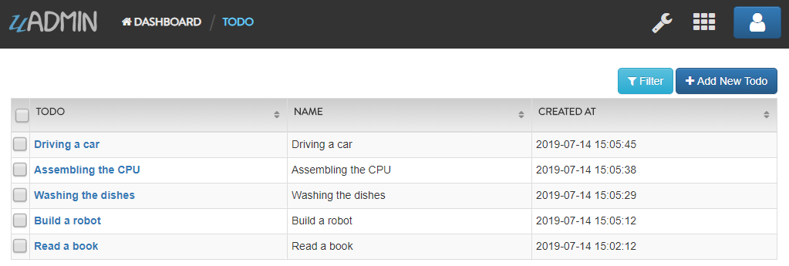Open your Todo List project, go to the todo.go and set the list_exclude tag in the CreatedAt field.
package models
import (
"time"
"github.com/uadmin/uadmin"
)
// Todo model ...
type Todo struct {
uadmin.Model
Name string
CreatedAt time.Time `uadmin:"list_exclude"` // <-- place it here
}
Run your application. From uAdmin dashboard, go to Todo model and ensure that the CreatedAt field in the list is now hidden.
Now exit your application. Create a file named filter_list.go inside the api folder with the following codes below:
package api
import (
"net/http"
"strings"
// Specify the username that you used inside github.com folder
"github.com/username/todo/models"
"github.com/uadmin/uadmin"
)
// FilterListAPIHandler !
func FilterListAPIHandler(w http.ResponseWriter, r *http.Request) {
// r.URL.Path creates a new path called /filter_list
r.URL.Path = strings.TrimPrefix(r.URL.Path, "/filter_list")
r.URL.Path = strings.TrimSuffix(r.URL.Path, "/")
// Set the parameter as id that can get multiple values
id := strings.Split(r.FormValue("id"), ",")
// Initialize the Todo model
todo := []models.Todo{}
// Call the schema of "todo" model
modelschema := uadmin.Schema["todo"]
// Fetch records from DB based on the assigned ID
// &modelschema - todo model in the schema to execute
// "id" - order the todo model by id field
// true - to sort in ascending order
// 0 - start at index 0
// -1 - get all the records
// &todo - todo model to execute
// id > ? - a query where id specifies multiple values
// id - a value assigned in the id variable to be set in ?
uadmin.FilterList(&modelschema, "id", true, 0, -1, &todo, "id IN (?)", id)
// Print the result in JSON format
uadmin.ReturnJSON(w, r, todo)
}
Establish a connection in the main.go to the API by using http.HandleFunc. It should be placed after the uadmin.Register and before the StartServer.
func main() {
// Some codes
// FilterListAPIHandler
http.HandleFunc("/filter_list/", uadmin.Handler(api.FilterListAPIHandler)) // <-- place it here
}
api is the folder name while FilterListAPIHandler is the name of the function inside filter_list.go.
Run your application. Search for the first three records on the id parameter in the address bar and see what happens.

Even though there is an assigned date on the CreatedAt field in the form, the API does not return a value because the CreatedAt field is hidden in the list. Now exit your application, go to todo.go in the models folder and remove the list_exclude tag in the CreatedAt field.
package models
import (
"time"
"github.com/uadmin/uadmin"
)
// Todo model ...
type Todo struct {
uadmin.Model
Name string
CreatedAt time.Time // Tag removed
}
Run your application. Search for the first three records on the id parameter in the address bar and see what happens.
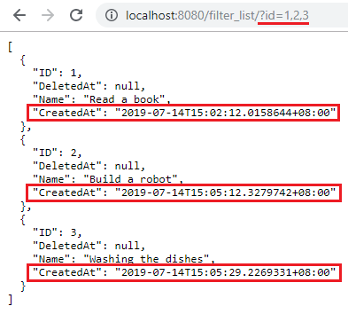As expected, the API is now returning a CreatedAt value because the CreatedAt field in the list is visible.
Quiz:
uadmin.FilterSorted¶
func FilterSorted(order string, asc bool, a interface{}, query interface{}, args ...interface{}) (err error)
FilterSorted fetches and sorts the records from the database.
uadmin.FilterSortedTable¶
func FilterSortedTable(table string, order string, asc bool, a interface{}, query interface{}, args ...interface{}) (err error)
FilterSortedTable fetches and sorts the records from the database. It allows you to pass a table name instead of just an array of model.
uadmin.FilterSortedValue¶
func FilterSortedValue(table string, column string, order string, asc bool, a interface{}, query interface{}, args ...interface{}) (err error)
FilterSortedValue allows you to sort the result and get single column from a table instead of reading data that you don’t need.
uadmin.FilterTable¶
func FilterTable(table string, a interface{}, query interface{}, args ...interface{}) (err error)
FilterTable is like Filter but you can pass a table name that allows you to put FORCE INDEX after the table name.
uadmin.Get¶
func Get(a interface{}, query interface{}, args ...interface{}) (err error)
Get fetches the first record from the database matching query and args.
Parameters:
a interface{}: Is the variable where the model was initialized
query interface{}: Is an action that you want to perform in your database
args …interface{}: Is the series of arguments for query input
Used in the tutorial:
Document System Tutorial Part 9 - Updating the Document Version
Document System Tutorial Part 11 - Document and Folder Permissions
Document System Tutorial Part 13 - Custom AdminPage function
Before we proceed to the example, read Tutorial Part 9 - Introduction to API to familiarize how API works in uAdmin.
Suppose you have five records in your Todo model.
Create a file named get_list.go inside the api folder with the following codes below:
func GetListHandler(w http.ResponseWriter, r *http.Request) {
// r.URL.Path creates a new path called /get_list
r.URL.Path = strings.TrimPrefix(r.URL.Path, "/get_list")
r.URL.Path = strings.TrimSuffix(r.URL.Path, "/")
// Set the parameter as todo_id
todoID := r.FormValue("todo_id")
// Get a record from DB
todo := models.Todo{}
uadmin.Get(&todo, "id=? ", todoID) // <-- place it here
// Prints the todo in JSON format
uadmin.ReturnJSON(w, r, todo)
}
Establish a connection in the main.go to the API by using http.HandleFunc. It should be placed after the uadmin.Register and before the StartServer.
func main() {
// Some codes
// GetListHandler
http.HandleFunc("/get_list/", uadmin.Handler(api.GetListHandler)) // <-- place it here
}
api is the folder name while GetListHandler is the name of the function inside get_list.go.
Run your application. Search for the third ID on the todo_id parameter in the address bar and see what happens.

Quiz:
uadmin.GetFieldsAPI¶
func GetFieldsAPI(w http.ResponseWriter, r *http.Request, session *Session)
GetFieldsAPI returns a list of fields in a model.
Parameters:
w http.ResponseWriter: Assembles the HTTP server’s response; by writing to it, we send data to the HTTP client
r *http.Request Is a data structure that represents the client HTTP request
session *Session Is an activity that a user with a unique IP address spends on a Web site during a specified period of time
Create a file named get_fields_api.go inside the api folder with the following codes below:
package api
import (
"net/http"
"strings"
"github.com/uadmin/uadmin"
)
// GetFieldsAPIHandler !
func GetFieldsAPIHandler(w http.ResponseWriter, r *http.Request) {
// r.URL.Path creates a new path called /get_fields_api
r.URL.Path = strings.TrimPrefix(r.URL.Path, "/get_fields_api")
r.URL.Path = strings.TrimSuffix(r.URL.Path, "/")
// Get the session key
session := uadmin.IsAuthenticated(r)
// Get fields in the API based on the assigned model name
uadmin.GetFieldsAPI(w, r, session)
}
Establish a connection in the main.go to the API by using http.HandleFunc. It should be placed after the uadmin.Register and before the StartServer.
func main() {
// Some codes
// Get Fields API Handler
http.HandleFunc("/get_fields_api/", uadmin.Handler(api.GetFieldsAPIHandler))
}
api is the folder name while GetFieldsAPIHandler is the name of the function inside get_fields_api.go.
Run your application and login using “admin” as username and password.

Now go to /get_fields_api/ path in the address bar where m is equal to an assigned model name (e.g. http://0.0.0.0:8080/get_fields_api/?m=dashboardmenu).
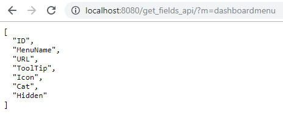It returns all fields in the Dashboard Menu model.
Quiz:
uadmin.GetForm¶
func GetForm(a interface{}, s *ModelSchema, query interface{}, args ...interface{}) (err error)
GetForm fetches the first record from the database matching query and args where it selects only visible fields in the form based on given schema.
Parameters:
a interface{}: Is the variable where the model was initialized
s *ModelSchema: Is the variable where the model was called in the Schema
query interface{}: Is an action that you want to perform in your database
args …interface{}: Is the series of arguments for query input
Before we proceed to the example, read Tutorial Part 9 - Introduction to API to familiarize how API works in uAdmin.
Suppose you have a record in the Todo model that has a field of Name and CreatedAt.

Open your Todo List project, go to the todo.go and set the hidden tag in the CreatedAt field.
package models
import (
"time"
"github.com/uadmin/uadmin"
)
// Todo model ...
type Todo struct {
uadmin.Model
Name string
CreatedAt time.Time `uadmin:"hidden"` // <-- place it here
}
Run your application. From uAdmin dashboard, go to Todo model, click any existing record that you have and you should get this result.

Now exit your application. Create a file named get_form.go inside the api folder with the following codes below:
package api
import (
"net/http"
"strings"
// Specify the username that you used inside github.com folder
"github.com/username/todo/models"
"github.com/uadmin/uadmin"
)
// GetFormAPIHandler !
func GetFormAPIHandler(w http.ResponseWriter, r *http.Request) {
// r.URL.Path creates a new path called /get_form
r.URL.Path = strings.TrimPrefix(r.URL.Path, "/get_form")
r.URL.Path = strings.TrimSuffix(r.URL.Path, "/")
// Set the parameter as id
id := r.FormValue("id")
// Initialize the Todo model
todo := models.Todo{}
// Call the schema of "todo" model
modelschema := uadmin.Schema["todo"]
// Get a record from DB based on the assigned ID
uadmin.GetForm(&todo, &modelschema, "id = ?", id)
// Print the result in JSON format
uadmin.ReturnJSON(w, r, todo)
}
Establish a connection in the main.go to the API by using http.HandleFunc. It should be placed after the uadmin.Register and before the StartServer.
func main() {
// Some codes
// GetFormAPIHandler
http.HandleFunc("/get_form/", uadmin.Handler(api.GetFormAPIHandler)) // <-- place it here
}
api is the folder name while GetFormAPIHandler is the name of the function inside get_form.go.
Run your application. Search for the first ID on the id parameter in the address bar and see what happens.
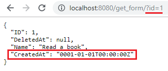Even though there is an assigned date on the CreatedAt field in the form, the API does not return a value because the CreatedAt field is hidden in the form. Now exit your application, go to todo.go in the models folder and remove the hidden tag in the CreatedAt field.
package models
import (
"time"
"github.com/uadmin/uadmin"
)
// Todo model ...
type Todo struct {
uadmin.Model
Name string
CreatedAt time.Time // Tag removed
}
Run your application. Search for the first ID on the id parameter in the address bar and see what happens.

As expected, the API is now returning a CreatedAt value because the CreatedAt field in the form is visible.
Quiz:
uadmin.GetID¶
func GetID(m reflect.Value) uint
GetID returns an ID number of a field.
Parameter:
m.reflectValue: Creates a new instance to read, set, or add values
Suppose I have four records in my Category model.
Education ID = 4
Family ID = 3
Work ID = 2
Travel ID = 1
Go to the main.go and apply the following codes below:
func main(){
// Some codes
// Initialize the Category model
categorylist := models.Category{}
// Get the value of the name in the categorylist
uadmin.Get(&categorylist, "name = 'Family'")
// Get the ID of the name "Family"
getid := uadmin.GetID(reflect.ValueOf(categorylist))
// Print the result
uadmin.Trail(uadmin.INFO, "GetID is %d.", getid)
}
Run your application and check the terminal to see the result.
[ INFO ] GetID is 3.
Quiz:
uadmin.GetImageSizer¶
type GetImageSizer interface {
GetImageSize() (int, int)
}
GetImageSizer can be inplemented for any model to customize the image size uploaded to that model.
uadmin.GetModelsAPI¶
func GetModelsAPI(w http.ResponseWriter, r *http.Request, session *Session)
GetModelsAPI returns a list of models.
Parameters:
w http.ResponseWriter: Assembles the HTTP server’s response; by writing to it, we send data to the HTTP client
r *http.Request Is a data structure that represents the client HTTP request
session *Session Is an activity that a user with a unique IP address spends on a Web site during a specified period of time
Create a file named get_models_api.go inside the api folder with the following codes below:
package api
import (
"net/http"
"strings"
"github.com/uadmin/uadmin"
)
// GetModelsAPIHandler !
func GetModelsAPIHandler(w http.ResponseWriter, r *http.Request) {
// r.URL.Path creates a new path called /get_models_api
r.URL.Path = strings.TrimPrefix(r.URL.Path, "/get_models_api")
r.URL.Path = strings.TrimSuffix(r.URL.Path, "/")
// Get the session key
session := uadmin.IsAuthenticated(r)
// Get all models from uAdmin dashboard
uadmin.GetModelsAPI(w, r, session)
}
Establish a connection in the main.go to the API by using http.HandleFunc. It should be placed after the uadmin.Register and before the StartServer.
func main() {
// Some codes
// Get Models API Handler
http.HandleFunc("/get_models_api/", uadmin.Handler(api.GetModelsAPIHandler))
}
api is the folder name while GetModelsAPIHandler is the name of the function inside get_models_api.go.
Run your application and login using “admin” as username and password.
Now go to /get_models_api/ path in the address bar to see the result (e.g. http://0.0.0.0:8080/get_models_api/).

It returns all models that you have in the uAdmin dashboard.
Quiz:
uadmin.GetSorted¶
func GetSorted(order string, asc bool, a interface{}, query interface{}, args ...interface{}) (err error)
GetSorted fetches and sorts the first record from the database matching query and args.
uadmin.GetSortedTable¶
func GetSortedTable(table string, order string, asc bool, a interface{}, query interface{}, args ...interface{}) (err error)
GetSortedTable fetches and sorts the first record from the database matching query and args. It allows you to pass a table name instead of just an array of model.
uadmin.GetString¶
func GetString(a interface{}) string
GetString returns string representation on an instance of a model.
Parameter:
a interface{}: Is the variable where the model was initialized
Suppose I have four records in my Category model.
Education ID = 4
Family ID = 3
Work ID = 2
Travel ID = 1
Go to the main.go and apply the following codes below:
func main(){
// Some codes
// Initialize the Category model
categorylist := models.Category{}
// Get the ID in the categorylist
uadmin.Get(&categorylist, "id = 3")
// Get the name of the ID 3
getstring := uadmin.GetString(categorylist)
// Print the result
uadmin.Trail(uadmin.INFO, "GetString is %s.", getstring)
}
Run your application and check the terminal to see the result.
[ INFO ] GetString is Family.
Quiz:
uadmin.GetStringer¶
func GetStringer(a interface{}, query interface{}, args ...interface{}) (err error)
GetStringer fetches the first record from the database matching query and args and get only fields tagged with stringer tag. If no field has stringer tag, then it gets all the fields.
Parameters:
a interface{}: Is the variable where the model was initialized
query interface{}: Is an action that you want to perform in your database
args …interface{}: Is the series of arguments for query input
Before we proceed to the example, read Tutorial Part 9 - Introduction to API to familiarize how API works in uAdmin.
Suppose you have a record in the Friend model that has an ID of 1 where Name field has a stringer tag.
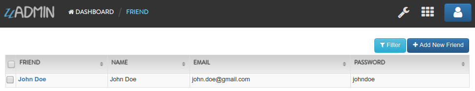Create a file named get_stringer.go inside the api folder with the following codes below:
// GetStringerHandler !
func GetStringerHandler(w http.ResponseWriter, r *http.Request) {
// r.URL.Path creates a new path called /get_stringer
r.URL.Path = strings.TrimPrefix(r.URL.Path, "/get_stringer")
r.URL.Path = strings.TrimSuffix(r.URL.Path, "/")
// Set the parameter as friend_id
friendID := r.FormValue("friend_id")
// Get a record from DB that fetches a field with a stringer tag
friend := models.Friend{}
uadmin.GetStringer(&friend, "id = ?", friendID)
// Print result in JSON format
uadmin.ReturnJSON(w, r, friend)
}
Establish a connection in the main.go to the API by using http.HandleFunc. It should be placed after the uadmin.Register and before the StartServer.
func main() {
// Some codes
// GetStringerHandler
http.HandleFunc("/get_stringer/", uadmin.Handler(api.GetStringerHandler))
}
api is the folder name while GetStringerHandler is the name of the function inside get_stringer.go.
Run your application. Search for the first ID on the friend_id parameter in the address bar and see what happens.

Quiz:
uadmin.GetTable¶
func GetTable(table string, a interface{}, query interface{}, args ...interface{}) (err error)
GetTable is like Get but you can pass a table name that allows you to put FORCE INDEX after the table name.
uadmin.GetValueSorted¶
func GetValueSorted(table string, column string, order string, asc bool, a interface{}, query interface{}, args ...interface{}) (err error)
GetValueSorted allows you to sort the result and get single column from a table instead of reading data that you don’t need.
uadmin.Max¶
func Max(a interface{}, column string, query interface{}, args ...interface{}) float64
Max return the maximum of a column in a table based on a filter.
uadmin.MaxTable¶
func MaxTable(table string, column string, query interface{}, args ...interface{}) float64
MaxTable return the maximum of a column in a table based on a filter.
uadmin.Min¶
func Min(a interface{}, column string, query interface{}, args ...interface{}) float64
Min return the minimum of a column in a table based on a filter.
uadmin.MinTable¶
func MinTable(table string, column string, query interface{}, args ...interface{}) float64
MinTable return the minimum of a column in a table based on a filter.
uadmin.Preload¶
func Preload(a interface{}, preload ...string) (err error)
Preload fills the data from foreign keys into structs. You can pass in preload a list of fields to be preloaded. If nothing is passed, every foreign key is preloaded.
Parameters:
a interface{}: Is the variable where the model was initialized
preload …string Is the field that you want to access with
Used in the tutorial:
Go to the friend.go and add the Points field inside the struct.
// Friend model ...
type Friend struct {
uadmin.Model
Name string `uadmin:"required"`
Email string `uadmin:"email"`
Password string `uadmin:"password;list_exclude"`
TotalPoints int // <-- place it here
}
Now go to the todo.go and apply some business logic that will get the total points of each friend in the todo list. Let’s apply overriding save function and put it below the Todo struct.
// Save ...
func (t *Todo) Save() {
// Save the model to DB
uadmin.Save(t)
// Get a list of other todo items that share the same
// FriendID. Notice that in the filter we use friend_id which
// is the way this is created in the DB
todoList := []Todo{}
uadmin.Filter(&todoList, "friend_id = ?", t.FriendID)
progressSum := 0
// Sum up the progress of all todos
for _, todo := range todoList {
progressSum += todo.Progress
}
// Preload the todo model to get the related points
uadmin.Preload(t) // <-- place it here
// Calculate the total progress
t.Friend.TotalPoints = progressSum
// Finally save the Friend
uadmin.Save(&t.Friend)
}
Suppose you have ten records in your Todo model.
Now go to the Friend model and see what happens.

In my list, Willie Revillame wins 85 points and Even Demata wins 130 points.
Quiz:
uadmin.RenderHTML¶
func RenderHTML(w http.ResponseWriter, r *http.Request, path string, data interface{}, funcs ...interface{})
RenderHTML creates a new template and applies a parsed template to the specified data object. For function, Tf is available by default and if you want to add functions to your template, just add them to funcs which will add them to the template with their original function names. If you added anonymous functions, they will be available in your templates as func1, func2 …etc.
Used in the tutorial:
Create an HTML file in templates folder named friends.html with the following codes below:
<!DOCTYPE html>
<html lang="en">
<head>
<meta charset="UTF-8">
<meta name="viewport" content="width=device-width, initial-scale=1.0">
<meta http-equiv="X-UA-Compatible" content="ie=edge">
<link rel="stylesheet" href="https://maxcdn.bootstrapcdn.com/bootstrap/4.3.1/css/bootstrap.min.css">
<title>Friends List</title>
</head>
<body>
<div class="container-fluid">
<table class="table table-striped">
<thead>
<tr>
<th>Name</th>
<th>Email</th>
</tr>
</thead>
<tbody>
</tbody>
</table>
</div>
</body>
</html>
In views folder, create a new file named friends_list.go with the following codes below:
package views
import (
"net/http"
"strings"
// Specify the username that you used inside github.com folder
"github.com/username/todo/models"
"github.com/uadmin/uadmin"
)
// FriendsList !
func FriendsList(w http.ResponseWriter, r *http.Request) {
// r.URL.Path creates a new path called /friends
r.URL.Path = strings.TrimPrefix(r.URL.Path, "/friends")
r.URL.Path = strings.TrimSuffix(r.URL.Path, "/")
// Friends field inside the Context that will be used in Golang
// HTML template
type Context struct {
Friends []map[string]interface{}
}
// Assigns Context struct to the c variable
c := Context{}
// Fetch Data from DB
friend := []models.Friend{}
uadmin.All(&friend)
for f := range friend {
// Assigns the Friend records
c.Friends = append(c.Friends, map[string]interface{}{
"ID": friend[f].ID,
"Name": friend[f].Name,
"Email": friend[f].Email,
})
}
// Pass Friends data object to the specified HTML path
uadmin.RenderHTML(w, r, "templates/friends.html", c)
}
Go back to friends.html in templates folder. Inside the <tbody> tag, add the following codes shown below.
{{range .Friends}}
<tr>
<td>{{.Name}}</td>
<td>{{.Email}}</td>
</tr>
{{end}}
In Go programming language, range is equivalent to for loop.
The double brackets {{ }} are Golang delimiter.
.Friends is the assigned field inside the Context struct.
.Name and .Email are the fields assigned in c.Friends.
Establish a connection in the main.go to the views by using http.HandleFunc. It should be placed after the uadmin.Register and before the StartServer.
import (
"net/http"
// Specify the username that you used inside github.com folder
"github.com/username/todo/models"
// Import this library
"github.com/username/todo/views"
"github.com/uadmin/uadmin"
)
func main() {
// Some codes
// Friend Handler
http.HandleFunc("/friends/", uadmin.Handler(views.FriendsList)) <-- place it here
}
The path is /friends/ in HandleFunc because that is the name that we used in r.URL.Path on FriendsList function located in views/friends_list.go.
Now run your application, go to /friends/ path and see what happens.

Quiz:
uadmin.RenderMultiHTML¶
func RenderMultiHTML(w http.ResponseWriter, r *http.Request, path []string, data interface{}, funcs ...interface{})
RenderMultiHTML creates a new template and applies a parsed template to the specified data object. For function, Tf is available by default and if you want to add functions to your template, just add them to funcs which will add them to the template with their original function names. If you added anonymous functions, they will be available in your templates as func1, func2 …etc.
Let’s create a Javascript library for navigation called nav.js. This library will allow the system to have partial update functionality whenever the user goes to another webpage and goes back. Partial update will load the website faster and cheaper. Add it in /static/assets/js path.
$(window).on("popstate", function(e){
partialLoad.call(null, e, $("#content-container"), preLoad, postLoad);
});
function partialLoad(e, target, preLoad, postLoad) {
var href;
if (e.type=="popstate"){
href = window.location.pathname;
} else {
e.preventDefault();
href = $(this).attr("href");
}
if (href == "" || href[0]=="#") {
return;
}
if(window.location.pathname == $(this).attr("href")){
return
}
if (preLoad && typeof preLoad == "function") {
preLoad(e);
}
// fetch the page
$.ajax({
url: href,
target: target,
preLoad: preLoad,
postLoad: postLoad,
originalEvent: e,
}).done(function(data, a, b){
data = $(data)
// Add the title to the page and remove it from the response
$("title").text(data.filter("title").text());
this.target.html(data);
this.target.find("title").remove();
// Add content to the page
if (e.type!="popstate") {
window.history.pushState({"href":href}, $(data).filter("title").text(), href);
}
}).always(function(e){
if (postLoad && typeof postLoad == "function") {
postLoad(this.originalEvent);
}
});
}
Create the following HTML files that we need in /templates/custom path.
index.html¶
This is the base HTML that you will visit first. For full update, this HTML will be loaded.
<!DOCTYPE html>
<html lang="en">
<head>
<meta charset="UTF-8">
<meta http-equiv="X-UA-Compatible" content="IE=edge">
<meta name="viewport" content="width=device-width, initial-scale=1.0">
<link rel="stylesheet" href="https://cdn.jsdelivr.net/npm/bootstrap@5.0.1/dist/css/bootstrap.min.css">
{{template "title" .}}
</head>
<body>
<!-- This element will access home.html as a partial update. That means, it will load the stub_index.html. -->
<a href="/" class="btn btn-primary page-loader">Home Page</a>
<!-- This element will access page1.html as a partial update. That means, it will load the stub_index.html. -->
<a href="/page1" class="btn btn-primary page-loader">Page 1</a>
<!-- This element will access page2.html as a full update. That means, it will load the index.html. -->
<a href="/page2" class="btn btn-primary page-loader full-update">Page 2</a>
<!-- This is where HTML codes from other files are stored. -->
<div id="content-container">
{{template "content" .}}
</div>
<script src="https://cdn.jsdelivr.net/npm/bootstrap@5.0.1/dist/js/bootstrap.min.js"></script>
<script src="https://code.jquery.com/jquery-3.6.0.js" integrity="sha256-H+K7U5CnXl1h5ywQfKtSj8PCmoN9aaq30gDh27Xc0jk=" crossorigin="anonymous"></script>
<script src="/static/assets/js/nav.js"></script>
<script>
function preLoad(e) {
$(e.currentTarget);
}
function postLoad(e) {
$(e.currentTarget);
}
$("a.page-loader").not(".full-update").on("click", function(e){
partialLoad.call(this, e, $("#content-container"), preLoad, postLoad);
});
</script>
</body>
</html>
stub_index.html¶
For partial update, this HTML will be loaded. That means, when you go to Inspect Element, only the HTML codes under the define will be displayed.
{{template "title" .}}
{{template "content" .}}
home.html¶
This is the sub HTML that will be loaded on the template. As an example, it will be accessed as a partial update so this will load to stub_index.html.
{{define "title"}}
<title>Home Page</title>
{{end}}
{{define "content"}}
<h1>This is the home page.</h1>
{{end}}
page1.html¶
This is the sub HTML that will be loaded on the template. As an example, it will be accessed as a partial update so this will load to stub_index.html.
{{define "title"}}
<title>Page 1</title>
{{end}}
{{define "content"}}
<h1>This is Page 1.</h1>
{{end}}
page2.html¶
This is the sub HTML that will be loaded on the template. As an example, it will be accessed as a full update so this will load to index.html.
{{define "title"}}
<title>Page 2</title>
{{end}}
{{define "content"}}
<h1>This is Page 2.</h1>
{{end}}
Once you are done with this step, create a file called page.go to implement the PageHandler in the views folder.
package views
import (
"net/http"
"strings"
"github.com/uadmin/uadmin"
)
// PageHandler allows the system to create a connection to the HTML pages.
func PageHandler(w http.ResponseWriter, r *http.Request) {
// Initialize an array of string to the variable.
tmplList := []string{}
// Check if this is a partial update
if r.Header.Get("X-Requested-With") == "XMLHttpRequest" {
tmplList = append(tmplList, "./templates/custom/stub_index.html")
} else {
tmplList = append(tmplList, "./templates/custom/index.html")
}
// Initialize the URL Path and trim it by slash. URL Path will depend on the name of your HTML file in order to access it.
// For example: Your HTML filename is page1.html. To access that, the URL should be localhost:8080/page1.
filename := r.URL.Path
filename = strings.TrimPrefix(filename, "/")
filename = strings.TrimSuffix(filename, "/")
// If the path is / then use the default file
// NOTE: no leading slash in default file name
if filename == "" {
filename = "home"
}
// To avoid displaying an error message on console, the code below should be implemented.
if filename == "favicon.ico" {
return
}
// Build the full path with the specified filename and append to the template list.
path := "./templates/custom/" + filename + ".html"
tmplList = append(tmplList, path)
// RenderMultiHTML creates a new template and applies a parsed template to the specified data object.
uadmin.RenderMultiHTML(w, r, tmplList, nil)
}
Establish a connection in the main.go to the views by using http.HandleFunc. It should be placed after the uadmin.Register and before the StartServer.
package main
import (
"net/http"
"github.com/your_name/project_name/views"
"github.com/uadmin/uadmin"
)
func main() {
// To avoid having issues when running an application, register function should be called.
uadmin.Register()
// Assign the Root URL value to /admin/. This code allows to resolve multiple registration issue when running an application.
setting := uadmin.Setting{}
uadmin.Get(&setting, "code = ?", "uAdmin.RootURL")
setting.ParseFormValue([]string{"/admin/"})
setting.Save()
// Register the Page Handler
http.HandleFunc("/", uadmin.Handler(views.PageHandler))
uadmin.StartServer()
}
Now run your application, go to http://localhost:8080/ and see what happens.
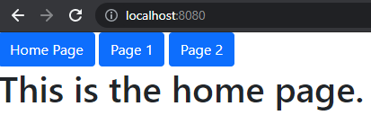Right click your mouse. Click “View Page Source” to find out whether the page you have loaded is a partial or full update.
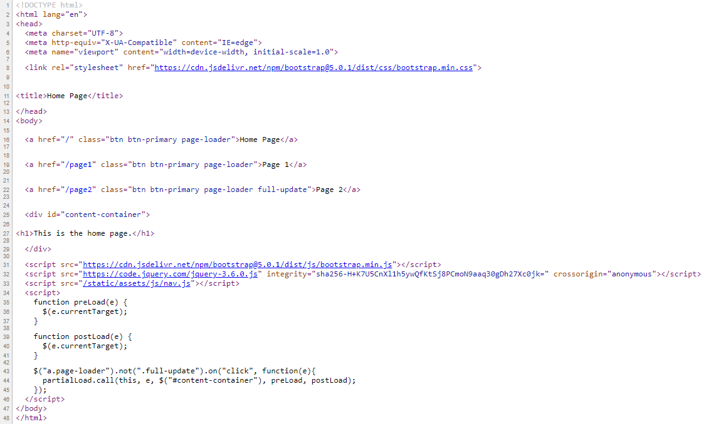If you see the code that starts with <html> tag then the rest following the standards, this one is the full update.
Go back to the home page UI. Let’s click the Page 1 button and see what happens.
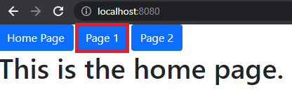You have been redirected to /page1 path. That means, you have loaded the page1.html.

Right click your mouse. Click “View Page Source” to find out whether the page you have loaded is a partial or full update.
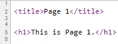As you can see, only the title and the content have loaded. This one is a partial update.
Go back to your browser. Let’s click the Page 2 button and see what happens.
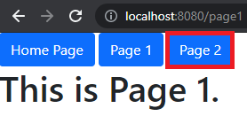You have been redirected to /page2 path. That means, you have loaded the page2.html.

Right click your mouse. Click “View Page Source” to find out whether the page you have loaded is a partial or full update.

This one is a full update.
Go back again to your browser. Click the Home Page button. Right click your mouse. Click “View Page Source” to find out whether the page you have loaded is a partial or full update.
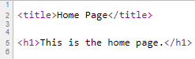Congratulations! You have created an application that renders multiple HTML.
uadmin.Std¶
func Std(a interface{}, column string, query interface{}, args ...interface{}) float64
Std return the standard diviation of a column in a table based on a filter.
uadmin.StdTable¶
func StdTable(table string, column string, query interface{}, args ...interface{}) float64
StdTable return the standard diviation of a column in a table based on a filter.
uadmin.Sum¶
func Sum(a interface{}, column string, query interface{}, args ...interface{}) float64
Sum return the sum of a column in a table based on a filter
uadmin.SumTable¶
func SumTable(table string, column string, query interface{}, args ...interface{}) float64
SumTable return the sum of a column in a table based on a filter.